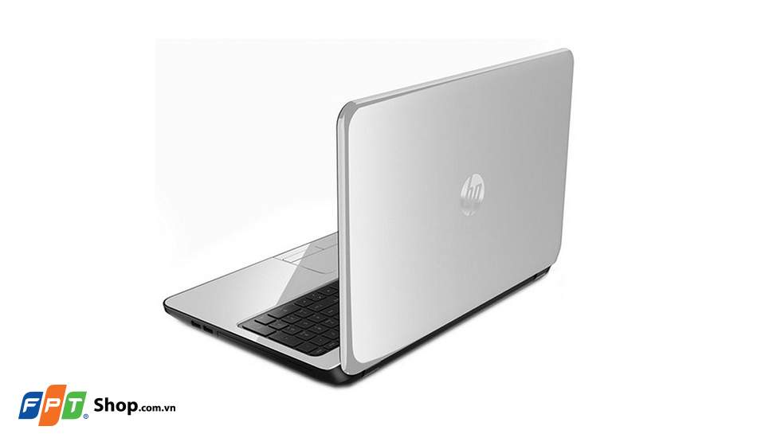
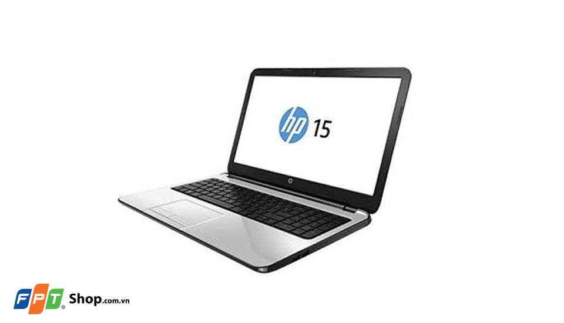
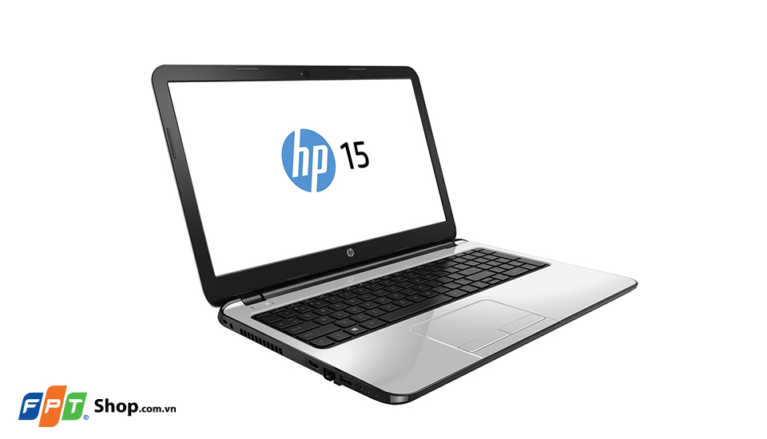

Mang thiết kế quen thuộc của HP với lớp vỏ phủ sơn mịn chống bám vân tay và màu sắc sang trọng, HP 15-ay074TU với mức giá tầm trung cùng cấu hình phù hợp, đáp ứng tốt nhu cầu làm việc và giải trí cả người dùng.
Thiết kế thời trang
Sản phẩm có thiết kế khá đặc trưng của các dòng HP với chất liệu bằng nhựa, trọng lượng nhẹ nhưng không kém phần cao cấp do phủ lớp sơn giả kim loại. Các cạnh máy bo tròn nhẹ tạo cảm giác màn hình ôm trọn hết thân máy, rất chắc chắn khi mang vác. Mặt lưng phẳng cùng với logo HP truyền thống.
Cấu hình đáp ứng tốt công việc
Máy được trang bị vi xử lý Intel core i3 6100U xung nhịp 2.3 GHz, RAM 4GB. Cấu hình này đáp ứng tốt nhu cầu công việc cũng như giải trí phổ biến. Card màn hình tích hợp Intel HD Graphics hỗ trợ các tác vụ mượt mà nhưng việc chơi các game 3D sẽ ít ổn định. Việc lưu trữ cũng khá thoải mái khi ổ cứng của máy có dung lượng lên đến 500 GB.
Màn hình 15,6 inch rộng rãi
Màn hình máy rộng 15,6 inch, độ phân giải HD (1366 x 768 pixels) và công nghệ HD BrightView LED-backlit cho độ tương phản cao, hình ảnh thật và tươi sáng hơn.
Cổng kết nối đa dạng
HP 15-ay074TU hỗ trợ đầy đủ các kết nối thông thường như USB 2.0, USB 3.0, HDMI, Webcam, cổng LAN, Wifi, ổ đĩa quang… đảm bảo cho quá trình trao đổi thông tin của các thiết bị được diễn ra hiệu quả, nhanh chóng, phục vụ nhu cầu của bạn tốt nhất.
Bàn phím và touchpad
Bàn phím thoải mái, dễ chịu nhờ các phím êm ái có kích thước rộng và khoảng cách hợp lý. Bàn di chuột Touchpad rộng thoáng, nhạy bén từng thao tác chạm lướt.